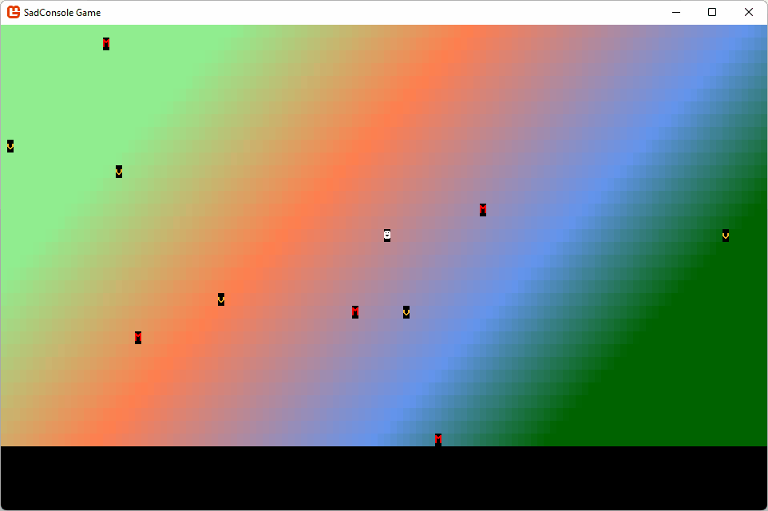

Get Started 5 - More objects
In this part of the tutorial you learn how to add different types of map objects that can react differently to the player touching them.
Previous articles in this tutorial:
Prerequisites
This part of the tutorial continues where the previous one left off. If you don't have your code handy, you can download it from here and follow along.
Concrete types
The GameObject type represents a thing that can be positioned and drawn on the map. However, it doesn't really "do" anything. Let's create two new classes, one for monster and one for treasure. Both will inherit from GameObject and override the Touched method.
Treasure
To create the treasure class, perform the following:
Add a new class to the project, named Treasure.cs.
Open the code file and replace the code with the following snippet:
namespace SadConsoleGame; internal class Treasure: GameObject { }In the class declaration, add a new constructor that calls the base class's constructor. This sets the appearance of the "monster" object.
public Treasure(Point position, IScreenSurface hostingSurface) : base(new ColoredGlyph(Color.Yellow, Color.Black, 'v'), position, hostingSurface) { }Unlike instantiating a normal
GameObjecttype, where you must specify how the game object looks,Treasurealways looks like "treasure" in the game. This is because the constructor forTreasurespecifies theColoredGlyphused by the game object. Any other defaults (though they aren't any yet) could be specified in the constructor.Next, add the code for the
Touchedmethod. Note that themap.RemoveMapObjectmethod doesn't yet exist.public override bool Touched(GameObject source, Map map) { // Is the player the one that touched us? if (source == map.UserControlledObject) { map.RemoveMapObject(this); return true; } return false; }The previous code checks if the player, the
UserControlledObjectis the one that touched this treasure. If it was, the object is removed from the map andtrueis returned, which lets the player move into that space.
Treasure is finished, but the RemoveMapObject method on the map doesn't exist, we'll create that after the Monster type is created.
Monster
To create the monster class, perform the following:
Add a new class to the project, named Monster.cs.
Open the code file and replace the code with the following snippet:
namespace SadConsoleGame; internal class Monster : GameObject { }In the class declaration, add a new constructor that calls the base class's constructor.
public Monster(Point position, IScreenSurface hostingSurface) : base(new ColoredGlyph(Color.Red, Color.Black, 'M'), position, hostingSurface) { }Just like
Treasure,Monsterspecifies theColoredGlyphfor everyMonstertype. You can introduce variation later, but for now, they'll all beMon the screen.Next, add the code for the
Touchedmethod.public override bool Touched(GameObject source, Map map) { return base.Touched(source, map); }
Update the map with RemoveMapObject
The map needs to expose the ability to remove an object from itself. This will be the RemoveMapObject method.
Open the Map.cs file.
Add the following code:
public void RemoveMapObject(GameObject mapObject) { if (_mapObjects.Contains(mapObject)) { _mapObjects.Remove(mapObject); mapObject.RestoreMap(this); } }
This code checks if the game object is actually associated with the map, and if it is, removes it from the map. There is another method used here though, mapObject.RestoreMap. When a game object is moved, it restores the map space before drawing itself to the new map space. We need to expose that capability so that when a game object is removed from the map, it can restore the map's space.
Update the game object with RestoreMap
Next, add the RestoreMap method to the GameObject class. This lets external objects, such as the map, tell the game object to fill back in the old map space.
Open the GameObject.cs file.
Add the following code:
public void RestoreMap(Map map) => _mapAppearance.CopyAppearanceTo(map.SurfaceObject.Surface[Position]);This code uses another modern C# technique, the
=>expression operator. When you declare a method and only have a single code statement, you can omit the{ }block and use the expression operator to infer the single code statement as the body of the method.
Use the new treasure and monster classes
The map has the CreateTreasure and CreateMonster methods, but they currently use theGameObject class. These two methods need to be modified to use the concrete types.
Open the Map.cs file.
Change the code in the
CreateTreasuremethod. Alter the type used when creating the treasure instance:From:
GameObject treasure = new GameObject(new ColoredGlyph(Color.Yellow, Color.Black, 'v'), randomPosition, _mapSurface);To:
Treasure treasure = new Treasure(randomPosition, _mapSurface);Note that the constructor parameters changed. The
Treaasuretype doesn't require aColoredGlyphto describe how it looks.Next, change the code in the
CreateMonstermethod in the same way asCreateTreasure:From:
GameObject monster = new GameObject(new ColoredGlyph(Color.Red, Color.Black, 'M'), randomPosition, _mapSurface);To:
Monster monster = new Monster(randomPosition, _mapSurface);
Run the game
Before you run the game to test out touching the treasure and monster, let's add more monsters and treasure to the map. The map has two methods, CreateTreasure and CreateMonster, which are both called once in the map's constructor. Let's call it five times instead, which makes the map a little more populated.
Open the Map.cs file.
Find the
Mapconstructor and add aforloop that runs five times.public Map(int mapWidth, int mapHeight) { _mapObjects = new List<GameObject>(); _mapSurface = new ScreenSurface(mapWidth, mapHeight); _mapSurface.UseMouse = false; FillBackground(); UserControlledObject = new GameObject(new ColoredGlyph(Color.White, Color.Black, 2), _mapSurface.Surface.Area.Center, _mapSurface); for (int i = 0; i < 5; i++) { CreateTreasure(); CreateMonster(); } }Run the game.
Now you'll see that there are multiple treasure objects. Walk the player into them and notice that they disappear. Do the same with monsters and notice that they remain.

Conclusion
As you can see, the game is starting to come together, there are game objects and a map object that ties everything together. In the next part of the series, you'll explore how to add more consoles to the screen to present status and information to the player.
- Next: Get Started 6 - .... Not yet ready
- Download the code for this part of the tutorial